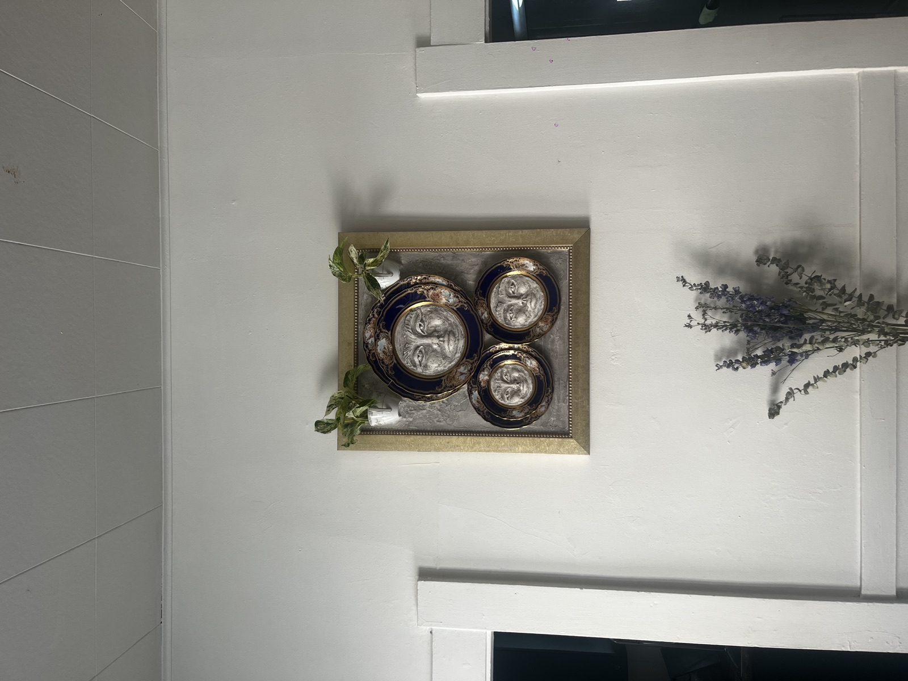

Chelsea Wright is a mixed media artist based in Vancouver, BC. Her work explores transformation, playfulness, and the quiet power of reclamation — giving discarded ceramics, thrifted frames, and found objects a second life as sculptural wall works.
Working in grout, paint, mosaic, and assemblage, she builds rough, imperfect exteriors that hold emotion, desire, and the unseen labor of healing. Faces surface from plaster; teacups become planters; broken china is pieced back together into something that remembers what it was and insists on what it has become.
Her pieces live somewhere between painting and object — framed like pictures, but growing, textured, and dimensional.